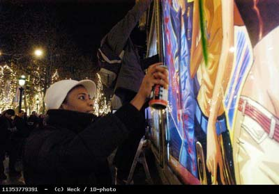

| |
Site dédié à la publication d'informations communiquées par le Collectif des déboulonneurs. En aucun cas ce site n'appelle à des actions illégales. | |
 |
||
|
Accueil du site > Paris > Vendredi 23 décembre 2005, deuxième action. Le collectif des déboulonneurs de (...)
Une grosse trentaine de personnes ne consomment pas, n’attendent pas dans la queue d’un cinéma, mais discutent paisiblement. En moins de cinq minutes, le groupe se retrouve plus d’une centaine, dont certains avec appareils photo ou caméras… Retrouvailles, joyeux brouhaha, réponses furtives et évasives à des journalistes trop impatients… Et les rangs continuent à se grossir. Soudain, le signal est donné par l’un des barbouilleurs. De l’angle de la rue Washington où avait été donné le rendez vous à la dernière minute, nous nous déplaçons à l’ange de la rue de Berri. Là, trois panneaux déroulants lumineux, aux publicités criardes et indécentes, nous narguent… pas pour longtemps ! Le barbouillage commence... 6 barbouilleurs et 2 barbouilleuses passent à l’acte . Tabourets, escabots, aérosols de peinture s’échangent joyeusement, avec calme et sourire, sous les yeux de l’assistance partisane. Le lieu est idéal avec un large trottoir et les badauds ne peuvent pas rater le spectacle… Nos barbouilleuses et barbouilleurs inscrivent 3 messages en noir, en rouge, en vert, en violet : « Halte au matraquage », « Fétichisme de la marchandise » et « Pollution mentale ». Ces inscriptions s’agrémenteront de « 50 par 70 », de « légitime réponse », de fleurs, et surlignures joyeuses… pour faire durer le plaisir ? 
photo P.Weck / 1D-photo
La tribune publique Au même moment, les discours improvisés se succèdent déjà, dénonçant les aspects du système publicitaire ou proposant la taille de 50cm par 70cm comme taille maximale d’affichage en France. Des badauds s’arrêtent, posent des questions, lancent des encouragements. Dans l’ensemble, tout se passe très bien. Ayons l’honnêteté de signaler un incident minime, mais qui est important quant à l’approche militante au sens large. Une prise de parole un peu sauvage, intempestive et un peu hors sujet d’un spectateur fut recadrée de manière quelque peu directive et vive. Rappelons que le collectif des déboulonneurs a convenu qu’il ne fera ni ne laissera dire et faire n’importe quoi. La tribune offerte ne l’est que pour un sujet précis : la lutte antipublicitaire. Même s’il s’agissait d’un quiproquo induit par la forme, il n’est pas question de faire d’autopromotion de ses propres luttes ou de se positionner sur une aile politique. Nous sommes apolitiques et notre cause est transversale du point de vue des sensibilités. Les enjeux en terme juridique ou en terme de perception publique et médiatique nous obligent à garder sous contrôle cette action de rue. Si cette « reprise de parole » était un peu forcée et maladroite, et peut-être perçue comme une certaine forme de violence (en tout cas, en décalage avec l’excellent climat général), il ne s’agissait pourtant que d’une réaction réflexe « de sauvegarde ». Nous nous revendiquons bien de la non-violence, mais nous improvisions au fil de situations inédites. A contre-courant de toutes les pratiques usuelles (sociales ou militantes), nous apprenons en chemin… La police est destabilisée… Lorsque la police arrive et encercle les barbouilleurs, ceux-ci vont directement à leur encontre, l’air calme, détendu, souriant ! Quand une policière demande si cela ne dérange pas qu’elle ait fait une dégradation, la barbouilleuse interrogée lui demande en retour si elle avait réellement lu ce qui avait été mis sur ce panneau. Plus le temps avance, plus les policier-e-s sont décontenancé-e-s. Les barbouilleurs annoncent qu’ils assument leur geste, qu’ils sont prêts à se faire arrêter, et attendent que les publicitaires fassent un procès. Les policier-e-s sont obligé-e-s de constater qu’il y a un public acquis à la cause, des journalistes, dont l’AFP, qui n’en perdent pas une miette, qu’il y a de la joie et une détermination anormale si ce n’avait été que du vandalisme. Cette posture philosico-politique semble donner une caution à cette troupe qui transgresse la loi en public, en toute assurance. Pendant ce temps, l’auditoire ne se laisse pas intimider : les prises de paroles se succèdent au micro, ou à la voix. La chanson du déserteur de Boris Vian, transformée en chanson du barbouilleur est entonnée à l’unisson. La tactique policière du responsable-bouc émissaire Les responsables de la police se succèdent, oscillant entre l’énervement : comment une manifestation a-t-elle pu survenir sur les Champs Elysées la veille de Noël ? (Eh oui ! Cette manifestation n’était pas déclarée et le lieu de rendez vous n’a pas été annoncé publiquement…) N’y a-t-il pas un responsable, un porte-parole ? (Eh non ! Il y a 120 responsables, un collectif des déboulonneurs ou chacun-e est porte-parole ! Huit barbouilleurs, dont deux femmes, qui restent sur le lieu du forfait, et sont prêt-e-s à ré-éditer leur action si la police est demandeuse !). La police, qui a contrôlé et relevé les identités des auteur-e-s, et ne sait pas comment réagir face à la tenacité des manifestant-e-s ni du public, vivant et soudé, y compris composé d’enfants et de personnes à l’air respectable, dont certain-e-s ont un age mur. Personne ne semble intimidé et ce cas de figure semble nouveau pour la police. Les prises de paroles se succèdent, un extrait du manifeste est lu. Les navettes des forces de l’ordre se font, en attendant des instructions plus précises, se doutant bien qu’il y a anguille sous roche, et qu’il ne faut pas procéder de manière simpliste. La police se met alors en quête de trouver un bouc-émissaire, ou un responsable… Ce serait tellement plus simple et pratique ! D’ailleurs, cette personne d’une bonne quarantaine d’année, qui prend la parole sur le tabouret de manière assurée et porte la cravate, ne ferait-elle pas l’affaire ? Peut être même qu’elle a des antécédents militants ? Une négociation surréaliste. Le barbouilleur pris à parti fait le choix de ne pas suivre l’injonction de rejoindre seul le fourgon. Et il va commencer à tenir au courant le public à voix haute et intelligible chaque décision, chaque déclaration de la police à son encontre et chacun de ses choix. Il se déclare prêt à assumer et aggraver son cas aux yeux de la police et de la justice, et annonce qu’il ne suivra pas la police, mais que celle-ci devra le porter, et que si la police a quelque chose à lui dire, c’est elle qui viendra jusque lui et non lui jusqu’à elle. Quand la commissaire du 8e arrondissement se résoud à venir jusque lui, les prétextes fallacieux s’enchaînent. Lorsqu’elle prétend que c’est lui qui a commis toutes les dégradations, d’autres barbouilleurs prennent position, aérosols à portée de main, en disant que c’est faux, et qu’ils peuvent le prouver en barbouillant immédiatement devant elle. En même temps, un spectateur a commencé un monologue clonwnesque, loufoque et hilarant, mais faisant passer des propos justes et sensibilisants : les policiers ont du mal à réprimer leurs rires, alors que le public est ravi de ce véritable spectacle… La commissaire est énervée, elle n’a pas le dessus et le fait de relater chacune de ses paroles et chacune des réponses et prises de position de notre militant menacé auprès du public, crée une pression qui s’accentue. « La non-violence a gagné » Le barbouilleur laisse alors une porte de sortie, en donnant l’information à la commissaire que le rassemblement peut se dissoudre en 5 minutes, et le lieu reprendre son apparence habituelle (à l’exception des panneaux barbouillés bien évidemment !). Quelques minutes passent, et la commissaire se soumet. « La non-violence a gagné » clame le barbouilleur qui cesse alors d’être inquiété. La pression retombe, la police se retire (après une dernière demande d’identité du barbouilleur récalcitrant), la prochaine date de l’action des déboulonneurs est donnée à la hâte…Chacun se retrouve soit pour rentrer, soit pour se retrouver en groupe dans un lieu amical. C’est une deuxième victoire consécutive du collectif des déboulonneurs de Paris. D’autres photos dans notre galerie |
|
Site utilisant SPIP - Hébergement Ouvaton
|